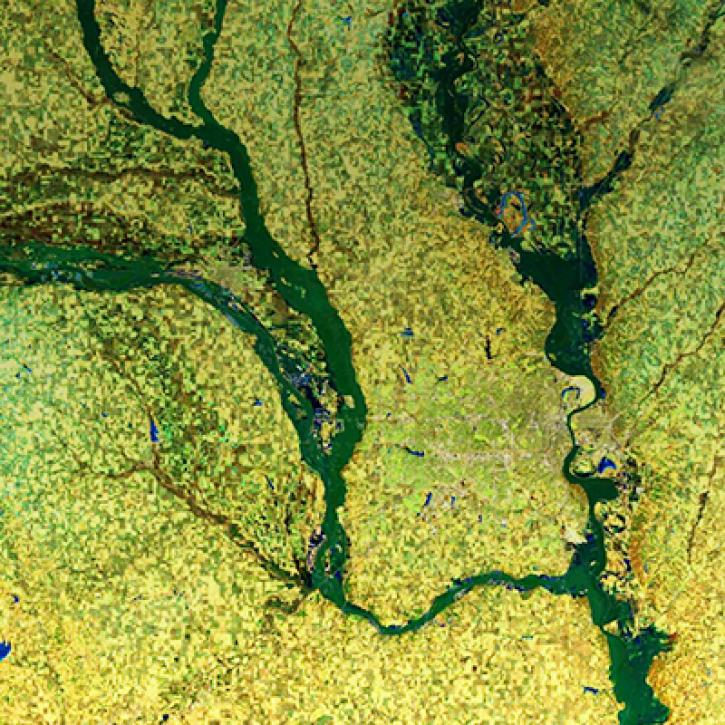
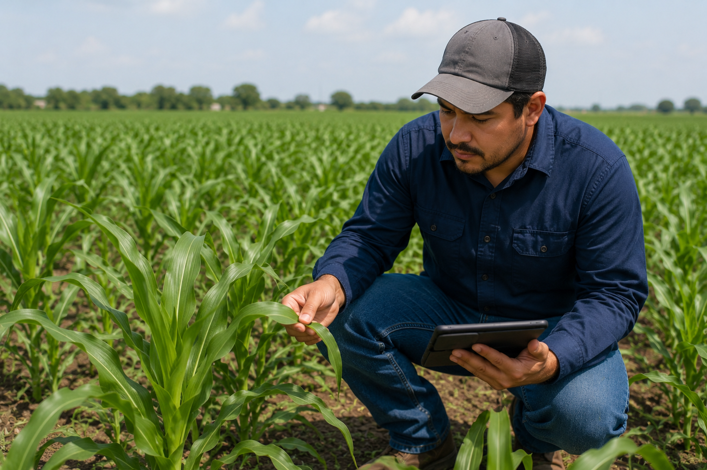
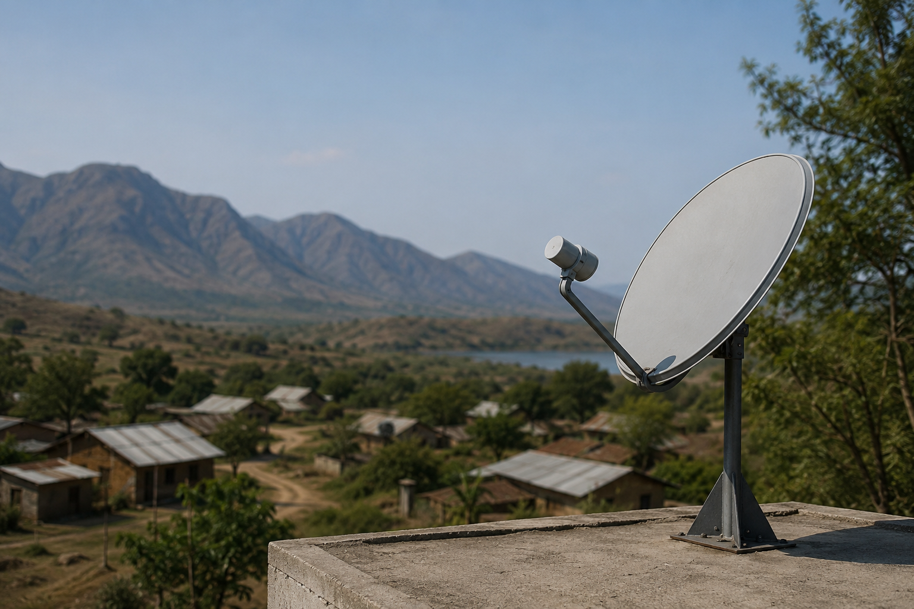
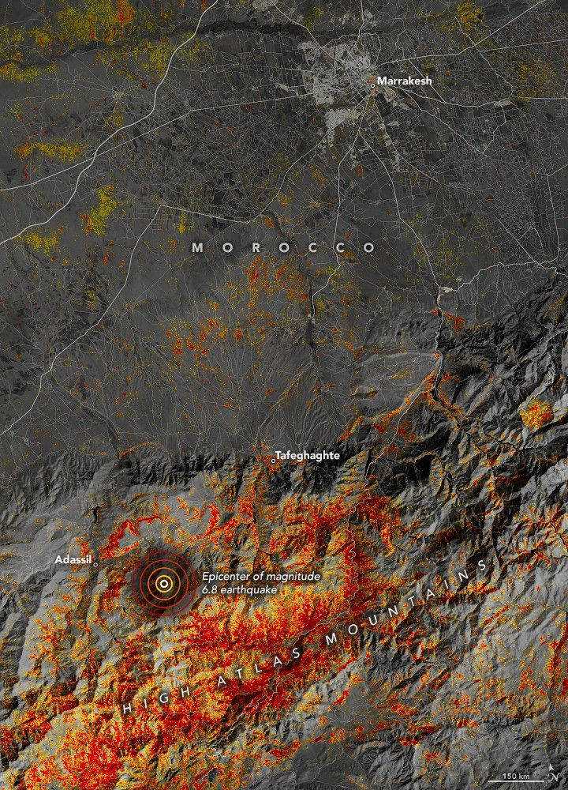
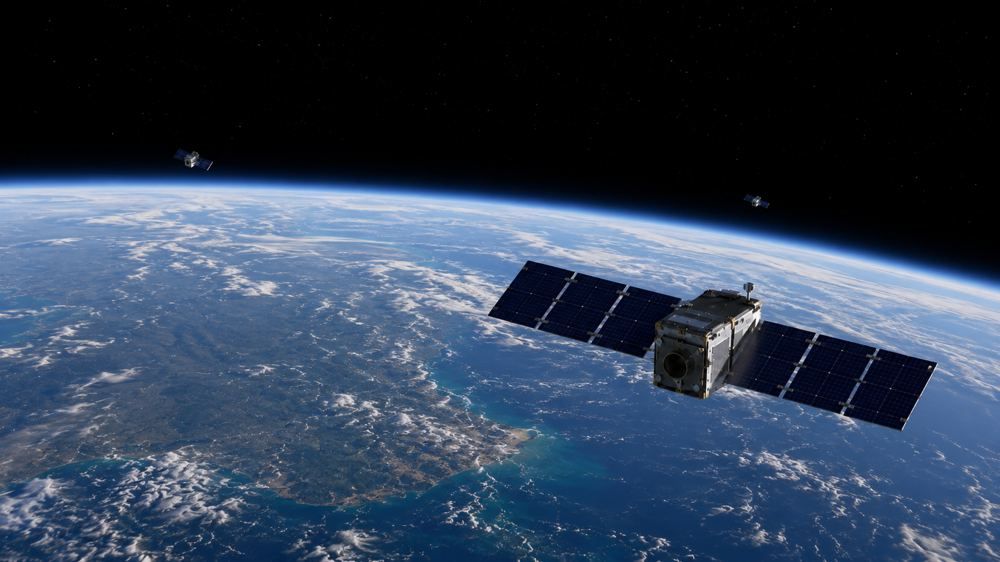
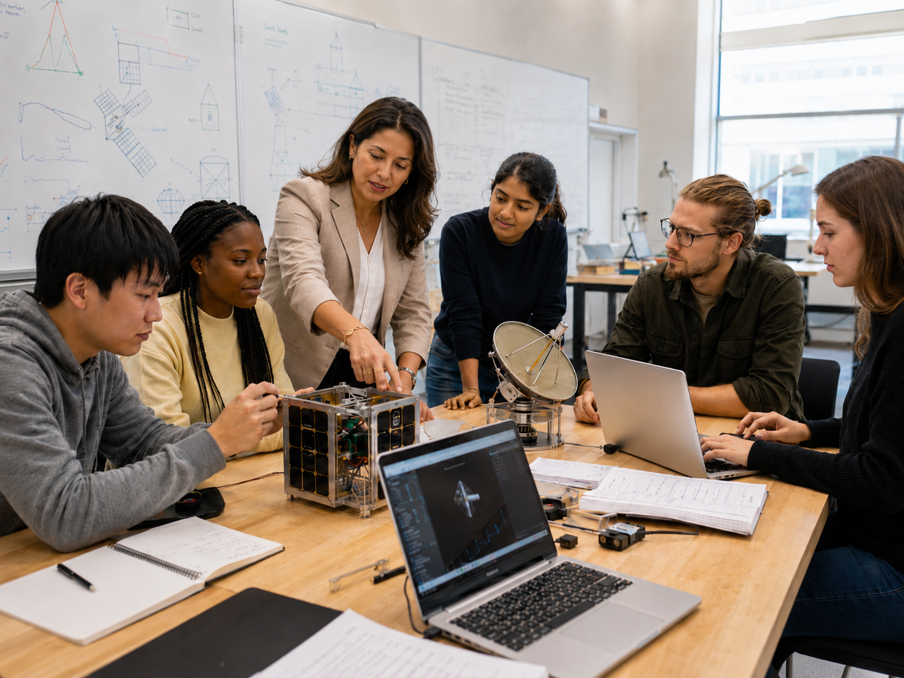

Broader Impacts
Nebulous is building AI-driven engineering methods for spacecraft, antenna systems, and deployable structures, with the goal of expanding what future missions and sensing systems can do.

Disaster Resilience and Humanitarian Response
Nebulous is developing approaches for agile, persistent Earth observation systems that can improve disaster preparedness and response. Better revisit rates, image quality, and near-real-time data could support early warning, emergency planning, situational awareness, and aid delivery during floods, wildfires, hurricanes, earthquakes, and other extreme events.

Climate, Agriculture, and Resource Management
Nebulous is developing optimization methods for high-agility Earth observation systems that can deliver higher-resolution and higher-frequency sensing. These capabilities could support climate monitoring, crop health assessment, water-use tracking, deforestation monitoring, land degradation studies, food security, and resource management in climate-vulnerable regions.

Digital Equity and Global Connectivity
Nebulous is exploring AI-optimized antenna and satellite system design that can support more resilient and affordable communications infrastructure, especially in remote, underserved, and infrastructure-limited regions. Improved coverage, lower latency, reduced operating costs, and more efficient constellation designs can help expand access to satellite-based connectivity.

Environmental Sustainability and Space Stewardship
Nebulous is working to develop optimized spacecraft design capabilities that can support high-agility remote sensing for climate monitoring, wildfire response, floods, extreme weather, and environmental change detection. Improved drag evaluation and orbit prediction can also reduce collision risk, support sustainable space traffic management, encourage designs that limit orbital debris, and enable safer spacecraft deorbiting.

Economic Benefits and Space Commerce
Nebulous is developing design approaches that can support the growth of commercial satellite constellations by enabling longer mission lifetimes, lower drag-related losses, reduced maintenance costs, and more scalable infrastructure in LEO and VLEO. These advances can improve the viability of next-generation space commerce while reducing the operational burden of maintaining large constellations.
National Security and Space Resilience
Nebulous is developing spacecraft and antenna optimization methods that can improve operations in low Earth orbit and very low Earth orbit. These capabilities could support heliophysics, space weather monitoring, Earth imaging, weather observation, satellite tracking, debris prediction, operational readiness, and future robotic and human exploration beyond Earth orbit.

Education and Workforce Development
Nebulous engages students across academic institutions in real-world, interdisciplinary challenges in aerospace, AI, optimization, and sustainability. Through internships, fellowships, and academic-industry partnerships, the project supports hands-on student involvement in next-generation spacecraft and antenna design while helping train the future workforce in AI-enabled engineering.